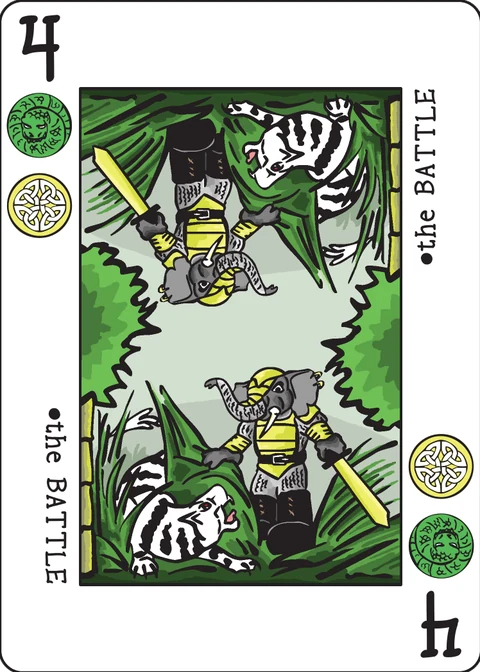

Defend and Capture
a solo game about defending your hometown
Designed by W. Nai. A solo game about defending you hometown.
The wiki suggests reading the PDF version of the rule book instead, which has better formatting, illustrations and an example turn.
Component
Defend and Capture is played using the extended Decktet excluding the Excuse card, so a total of 44 cards are used.
All Pawns/Courts/Crowns have a rank of 10. All Aces have a rank of 1.
Table Overview
The table consists of 8 areas:
- a) Battleground Area, a matrix of 3 by 3 slots. Each slot may or may not contain a card.
- b) Defense Area, a row of 3 slots on south of Battleground Area. Each slot corresponds to a column of Battleground Area. Each slot may or may not contain a card.
- c) Side Area, a column of 3 slots on east of Battleground Area. Each slot corresponds to a row of Battleground Area. Each slot may or may not contains a card.
- d) Damaged Area, a place to hold a pile of cards. Cards put here represent how many damages you have taken. When the rank sum of all the cards in this area reaches or exceeds 20, you lose the game.
- e) Captured Area, a place to hold a pile of cards. Cards put here represent how many enemies you have captured alive. When there are 12 or more cards in this area, you win the game.
- f) Main Deck, a pile of face down cards to draw from.
- g) Discard Pile, a pile of discarded cards.
- h) Hand, cards in your hand.
Setup
- Randomly select 2 Pawns/Courts and put them into Captured Area. They could be two Pawns, or two Courts, or one Pawn plus one Court.
- Randomly select 2 non-Pawn/Court/Crown cards (i.e. cards ranked 1 ~ 9) and put them also into Captured Area.
- Shuffle all remaining cards to form the Main Deck.
Game play
After setup, the game goes turn after turn until game ends. Each turn has two phases, an Enemy Phase followed by a Player Phase.
1. Enemy Phase
1.1 Attack
Each card (from left to right) in the bottom row (south-most) of Battleground Area performs an attack to the corresponding slot in the same column in Defense Area.
- If the slot is empty, move the attacking card to Damaged Area. (you took full damage from the power of the attacking card.)
- If the slot contains a card (the defending card) which has an equal or lesser rank than the attacking card, move the defending card to Damaged Area, and put the attacking card into Discard Pile. (you defended part of the coming damage.)
- If the slot contains a card (the defending card) of greater rank than the attacking card, put the attacking card into Discard Pile. The defending card stays at its place. (defense is completely successful and so no damage is taken.)
1.2 Advance
After enemy Attack, there should be no cards in the bottom row of Battleground Area now. Move every card in middle and top row of Battleground Area down by one slot.
1.3 Reinforce
Draw 3 cards from Main Deck and fill the top row of Battleground Area, from left to right.
Any time you need to draw a card from Main Deck but it is empty, reshuffle Discard Pile to form a new Main Deck. In a very rare case that the Discard Pile is also empty, you simply skip drawing card and skip filling aimed slot (We have not yet encountered this situation).
1.4 Hasten
If there are 8 or more cards in Captured Area, repeat the previous 3 enemy steps (Attack, Advance and Reinforce) once.
2. Player Phase
2.1 Draw cards
Draw cards from Main Deck to your Hand, until your Hand contains X cards. X is the number of non-Pawn/Court/Crown cards (i.e. cards ranked 1 to 9) in Captured Area.
If you already have X or more cards in your Hand before this step, do not draw any card.
Any time you need to draw a card from Main Deck but it is empty, reshuffle Discard Pile to form a new Main Deck. In a very rare case that the Discard Pile is also empty, you simply skip drawing card and skip refilling your Hand (We have not yet encountered this situation).
2.2 Take Actions
Take up to Y actions in any combination in any order. Y is the number of Pawns/Courts/Crowns in Captured Area before you take your first action this turn.
Each type of action may be taken multiple times as long as the total number of actions you take does not exceed Y.
Available action 1: Play
Play a card from your Hand to a slot in Defense Area or Side Area.
If there is already a card in the desired slot, replace it. The card being replaced goes into Discard Pile.
Available action 2: Counterattack
Launch a counterattack from a card in Defense Area or Side Area. If the counterattack is launched from a card in Defense Area, it affects all 3 cards in the same column in Battleground Area. If the counterattack is from a card in Side Area, it affects all 3 cards in the same row in Battleground Area.
Check each of the 3 affected cards in Battleground Area:
Here, the card in the same column in Defense Area as the affected card is called the defense card. The card in the same row in Side Area as the affected card is called the side card.
- If there is no defense card or if there is no side card (the corresponding slot is empty), nothing happens.
- If both the defense card and the side card share at least one suit with the affected card, AND the rank sum of the defense card and the side card is greater than the rank of the affected card, then the affected card goes into the Discard Pile. (you destroyed an enemy.)
- If both the defense card and the side card share at least one suit with the affected card, AND the rank sum of the defense card and the side card equals the rank of the affected card, then the affected card goes into the Captured Area. (your power of the counterattack is just right that you captured an enemy alive.)
- in all other cases (e.g. if the rank sum of the defense card and the side card is less than the rank of the affected card, or if the defense card does not share a suit with the affected card, or if the side card does not share a suit with the affected card, etc.), nothing happens.
Available action 3: Interchange
Swap a card from your Hand with a card in Captured Area.
Available action 4: Sacrifice
Swap a card from your Hand with a card of lesser rank in Damaged Area.
Available action 5: Withdraw
Pick up a card from Defense Area or Side Area back to your Hand.
2.3 Discard Cards
Discard as many cards as you wish from your Hand to Discard Pile.
Game End
When the rank sum of all the cards in Damaged Area reaches or exceeds 20, you lose the game.
When there are 12 or more cards in Captured Area, you win the game.
Variants
The wiki page leaves this section empty.
Links
- A PDF version of rule book that has better formatting, illustrations and an example turn.
- Digital version for Windows
Note on this implementation
Turn order. The wiki's turn is "an Enemy Phase followed
by a Player Phase", so the very first thing a game does is run an Enemy
Phase — on the empty board of turn 1 that only fills the top row of the
Battleground (Attack and Advance have nothing to act on). The app runs it
during setup, which is also the order the reference digital version
(A Few Decktet
Games, src/DefenseCapture1p.cs) uses. Its setup likewise
draws the four starting Captured cards (2 Pawns/Courts, 2 cards ranked 1–9)
by random selection from the shuffled 44-card deck, and its action model —
select one hand card and one slot for Play, select a Defense/Side card alone
for Counterattack and Withdraw, combine one hand card with one Captured or
Damaged card for Interchange and Sacrifice — is followed here.
Ending mid-phase. The wiki states the two end conditions without saying when they are checked. This app checks after every card added to the Captured or Damaged Area, so a capture during a Counterattack, or the last point of damage during an Enemy Phase, ends the game immediately. If both thresholds trip at the same moment, the win is checked first — the same order as the digital version.
Counterattack suits. "Both the defense card and the side card share at least one suit with the affected card" is read (as the digital version does) as two separate tests: the defense card must share a suit with the enemy, and the side card must share a suit with the enemy. The two guard cards need not share a suit with each other.
Sacrifice. "A card of lesser rank" is read strictly: the Damaged card you swap out must rank lower than the hand card you swap in (the digital version refuses equal ranks too). The hand card goes to the Damaged Area, so a sacrifice can still push the damage sum up — the loss check runs right after it.
Hasten. The repeat is judged on the Captured count after the first Attack/Advance/Reinforce pass, and it repeats that whole pass once (not recursively). The digital version has two optional extra "surprise" twists gated on the same count; they are off by default there and are not implemented here.
Discarding and ending the turn. Step 2.3 is a separate step, so the app lets you discard any number of hand cards one at a time for free, and End turn then runs the Enemy Phase and the next Draw step. Your Y actions are fixed at the Draw step (the digital version's Action Points), which matches the wiki's "before you take your first action this turn" since the Draw step precedes any action.
Reshuffling. When the Main Deck runs dry the Discard Pile is shuffled into a new one; the reshuffle is driven by a counter in the saved state, so a reloaded game reshuffles exactly as it would have. If both piles are empty, draws are skipped, as the wiki says.
Score. The wiki defines no score, so the app records only the win and how many enemies you captured alive.
Credits
Original design: W. Nai. Rules text from the Decktet wiki.
These rules are copied from the Defend and Capture page of the Decktet wiki (page revision 2, 13 April 2024) so they can be read offline, under the wiki's CC BY-NC-SA 3.0 licence. Cards by P.D. Magnus, same licence.
Further reading: the PDF rule book at BGG and the digital version for Windows, both of which were consulted while implementing this game.